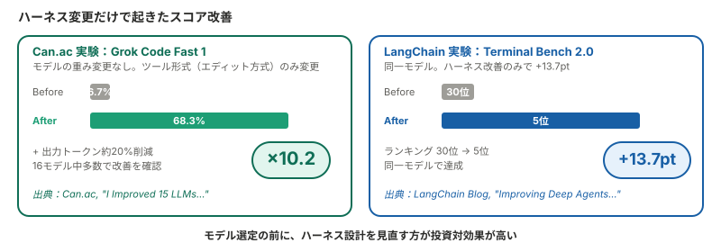
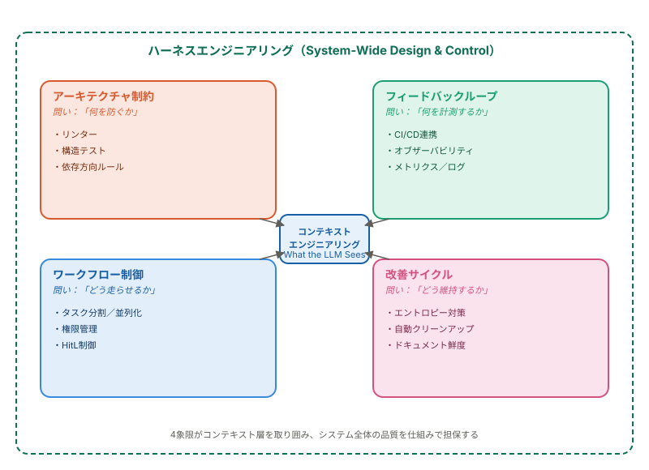
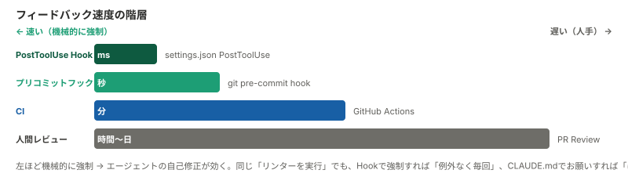
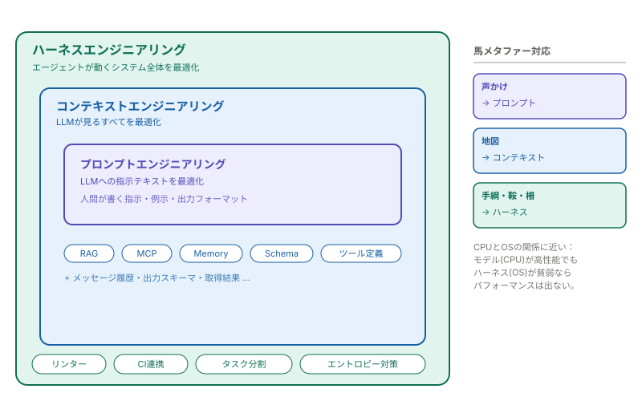
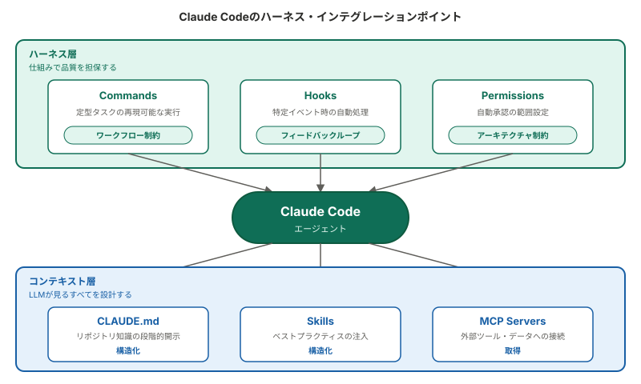

ハーネスエンジニアリングとは何か：コンテキストエンジニアリングの「外側」を定義する新概念¶
対象 / ポイント
対象: コンテキストエンジニアリングの基礎を理解しているエンジニア／Coding Agentの運用改善を検討している開発者／「〇〇エンジニアリング」の乱立に整理軸が欲しい方
ポイント:
- ハーネスはエージェントの品質を仕組みで担保する環境設計。 プロンプトやコンテキストの改善だけでは防げない「システムレベルの逸脱」に対処する
- ハーネス次第でスコアが桁違いに動く。 Can.acの実験では、モデルの重みを一切変えず6.7%→68.3%に改善した例がある
- Coding Agentユーザーにとっても直接関係する。 Claude Codeのhooks・commands・permissionsは、まさにハーネスのインテグレーションポイント
1. プロンプトでは防げない問題がある¶
LLMエージェントは強力だが、繰り返し使うと特有の問題を起こす。
アーキテクチャの依存方向を無視してレイヤーを横断するインポートを書く。リポジトリ内の3ヶ月前のメモを最新の仕様として採用する。リンターエラーに遭遇する → コードを直す代わりに.eslintrcを編集してルールをoffにする → CIが通る → レビューで発覚する。タスクの完了を宣言するが、実際にはEnd-to-Endテストを通していない。
これらの問題に共通するのは、プロンプトやコンテキストをどれだけ改善しても構造的に防げないという点である。CLAUDE.mdに「リンターを実行せよ」と書いても、コンテキストウィンドウを大量に消費した長いデバッグセッションの47回目には忘れ去られる。
この「プロンプトでは防げない問題」を仕組みで解決する設計領域に、2026年2月、名前がついた。
2. ハーネスエンジニアリングとは何か¶
ハーネスエンジニアリングとは、エージェントの出力品質をプロンプトではなく仕組みで担保する環境設計のことである。
具体的には、依存方向を機械的に強制するリンター、ファイル保存のたびに自動実行されるHook、CIパイプラインによる品質ゲート、リポジトリの情報鮮度管理などが該当する。LLMの「外側」で構築・運用する仕組み全体を指す。
ハーネス（harness）の原義は馬具——手綱、鞍、くつわといった、馬の力を正しい方向に伝え、暴走を防ぎ、長距離でも安定して走らせるための一式の仕組みを指す。強力だが気まぐれな馬（LLMエージェント）に畑を耕させる世界への移行——という比喩で、この概念は名付けられた。馬は人間より速く走れるが、放っておくと道を外れるし、隣の畑に入り込むこともある。10頭同時に走らせればなおさらである。
この対比は直感的である。詳しくはセクション6で3層の入れ子図とともに整理する（CPUとOSの関係としても語られる5）。
用語の成立過程¶
概念自体は2025年後半から断片的に使われていたが、用語として一気に定着したのは2026年2月の数週間である。
Mitchell Hashimoto（HashiCorpの共同創業者）がブログ記事で「Engineer the Harness」という実践に名前を与えた。1 数日後にOpenAIが大規模な実践報告を公開。2 Ethan Mollickがフレームワーク全体を「Models, Apps, and Harnesses」の3概念で整理し、3 Martin Fowlerが即座に分析記事を公開した。4 わずか数週間でAIエンジニアリングの主要語彙に加わり、2026年3月時点では「概念の紹介」段階から「実装パターンの体系化」段階に移行しつつある。
3. ハーネスだけで性能は何倍変わるのか¶
概念の定義だけでは説得力に欠ける。ハーネスの有無や設計の違いが、定量的にどれほどの差を生むのかを確認する。
Can.acの実験：同一モデルで10倍の差¶
セキュリティ研究者のCan.acが公開したHashline実験では、ハーネスのツール形式（エディット方式）を変更しただけで、16モデル中多くのモデルでコーディングベンチマークスコアが改善した。特にGrok Code Fast 1は6.7%から68.3%に跳ね上がった。モデルの重みには一切手を加えていない。出力トークンも約20%削減と報告されている。8
LangChainの実験：30位から5位へ¶
LangChainのTerminal Bench 2.0でも同様の結果が出ている。ハーネスの改善だけでランキングが30位から5位に飛躍し、同一モデルで13.7ポイントの改善を達成した。9

これらの結果は、モデル選定で悩む前にハーネスの設計を見直す方が投資対効果が高いことを示している。
4. OpenAIの100万行実験：ハーネスの実例¶
数値だけでなく、実際にどう使われたかも確認する。OpenAIが2026年2月に公開した実践報告は、ハーネスエンジニアリングの最も詳細な事例にあたる。
実験の概要¶
OpenAIの内部チームは、2025年8月に空のリポジトリからスタートし、5ヶ月間で約100万行のプロダクトを構築した。条件は「手書きコードゼロ」。すべてのコードをCodexエージェントが生成し、約1,500のプルリクエストを通じてマージされた。2
開発速度は手動の約10倍と報告されている。ただし、OpenAIにはCodexの性能を高く見せるインセンティブがある点は留意が必要である。
5つのハーネス原則¶
この実験から導かれた原則は、ハーネスエンジニアリングの実践ガイドとして読める。
原則1：環境を設計する、コードを書かない。 エンジニアの仕事は、エージェントが有効に機能するための環境整備に変わった。エージェントが詰まったとき、「もっと頑張る」のではなく「何の能力が不足しているか」を診断し、その能力自体をエージェントに構築させる。
原則2：アーキテクチャを機械的に強制する。 ドメインごとに依存方向を定義し、カスタムリンターと構造テストで違反を自動検出する。ドキュメントに書くだけでは不十分で、機械的に強制できなければエージェントは逸脱する。
原則3：リポジトリを唯一の情報源にする。 Slackの議論やGoogle Docsの知識は、エージェントにとって存在しないのと同じである。すべてのチーム知識をリポジトリ内のバージョン管理されたアーティファクトとして配置する。
原則4：オブザーバビリティをエージェントに接続する。 Chrome DevToolsをランタイムに接続し、エージェントがDOMスナップショットやスクリーンショットを取得できるようにした。ログとメトリクスへのクエリ機能を付与し、「起動を800ms以内にせよ」のような指示を計測可能な目標にした。
原則5：エントロピーに対抗する。 初期は毎週金曜日にチームの20%の時間を「AIスロップ」の手動クリーンアップに充てていたが、これをCodexによるバックグラウンドタスクに自動化した。
5. ハーネスの4象限：何を設計するのか¶
ハーネスは単一の技術ではない。何を設計すればよいのか。 OpenAIの実例を見ると複数の関心領域にまたがることがわかる。これを4象限で整理する。

4象限はそれぞれ異なる問いに対応している。
- アーキテクチャ制約： 「何を防ぐか」 — リンターや依存ルールで逸脱を機械的に阻止する
- フィードバックループ： 「何を計測するか」 — CI/CDやオブザーバビリティで結果を検証する
- ワークフロー制御： 「どう走らせるか」 — タスク分割、並列実行、権限管理でエージェントの動線を設計する
- 改善サイクル： 「どう維持するか」 — エントロピー対策やドキュメント鮮度管理で長期的な品質を保つ
ここで重要なのはフィードバックの速度である。
フィードバック速度の階層
PostToolUse Hook（ミリ秒）→ プリコミットフック（秒）→ CI（分）→ 人間レビュー（時間〜日）
チェックをより速い層に移動させるほどエージェントの自己修正が効く。CLAUDE.mdに「リンターを実行せよ」と書くことと、Hookでリンターを強制実行することの間には「ほぼ毎回」と「例外なく毎回」の差がある。

6. プロンプト・コンテキスト・ハーネスの関係¶
ここまでの内容を踏まえて、3つの「〇〇エンジニアリング」の関係を整理する。
大枠としては ハーネス ⊇ コンテキスト ⊇ プロンプト という入れ子構造で理解できる。

Phil Schmidのアナロジーで言えば、モデルがCPUなら、ハーネスはOSである。CPUがどれだけ高性能でも、OSが貧弱ならパフォーマンスは出ない。5
セクション2で導入した馬のメタファーで言い換えると、プロンプトは馬への声かけ、コンテキストは馬に見せる地図、ハーネスは手綱・鞍・柵・道の整備にあたる。馬がどれだけ賢くても、手綱がなければ10頭を同時に安全に走らせることはできない。
「包含」か「補完」か¶
この3層の関係については、論者によって温度差がある。
包含関係として捉える立場は直感的でわかりやすい。一方で、mtrajanは「Harness Engineering Is Not Context Engineering」というタイトルで、両者の問いの違いを明確に区別した。6
- コンテキストエンジニアリングが問うのは「エージェントに何を見せるか」
- ハーネスエンジニアリングが問うのは「システムが何を防ぎ、何を計測し、何を修正するか」
実務上は、どちらの見方を採用しても設計判断に大きな差は出ない。重要なのは「コンテキスト設計だけではカバーできない領域がある」という認識の方である。
なお、本記事ではセクション5・7を含め、包含モデルを前提に構成している。
判別の目安¶
「これはコンテキストの話か、ハーネスの話か」を判別する簡易な基準を示す。
| 判断基準 | コンテキストエンジニアリング | ハーネスエンジニアリング |
|---|---|---|
| 最適化の対象 | 1回の推論の入力品質 | システム全体の継続的品質 |
| 問いの形 | 「何を見せるか」 | 「何を防ぎ、計測し、制御し、修正するか」 |
| 失敗パターン | 1回の出力が不正確 | 時間経過とともに品質が劣化 |
| 典型的な実装 | RAG、プロンプト設計、Memory | リンター、CI連携、タスク分割、自動クリーンアップ |
| 変更頻度 | タスクごとに動的 | 比較的安定した基盤設計 |
7. Coding Agentユーザーにとっての意味¶
ここまでの概念は、自分のCoding Agentにどう関係するのか。 ハーネスエンジニアリングは本来、LLMアプリケーション開発者向けの概念である。しかし、Coding Agentのユーザーは例外にあたる。
Claude Codeのハーネス・インテグレーションポイント¶
Claude Codeを例にとると、ユーザーが自由に設計できるハーネスの構成要素は以下のとおりである。

| 構成要素 | 役割 | ハーネス上の位置づけ |
|---|---|---|
| CLAUDE.md | リポジトリ知識の集約・段階的開示 | コンテキスト（構造化） |
| Commands | 定型タスクの再現可能な実行 | ハーネス（ワークフロー制約） |
| Hooks | 特定イベント時の自動処理 | ハーネス（フィードバックループ） |
| Skills | ベストプラクティスの注入 | コンテキスト（構造化） |
| MCP Servers | 外部ツール・データへの接続 | コンテキスト（取得） |
| Permissions | 自動承認の範囲設定 | ハーネス（アーキテクチャ制約） |
出力スキーマの設計はCoding Agentでは通常ツール側で処理されるため、本表では割愛している。
たとえばPostToolUse Hookの最小構成は以下のようになる。ファイル保存のたびにリンターが自動実行され、エージェントはその結果を即座に受け取って修正できる。
// .claude/settings.json（最小例）
{
"hooks": {
"PostToolUse": [{
"matcher": "Write",
"hooks": [{ "type": "command", "command": "npx oxlint $CLAUDE_FILE_PATH" }]
}]
}
}
実務上のポイント¶
Coding Agentの運用改善において、「プロンプトを改善したのに品質が上がらない」という状況に遭遇した場合、問題がコンテキスト層にあるのかハーネス層にあるのかを切り分けることが有効になる。
コンテキスト層の問題の兆候： 1回の出力が的外れ、必要な情報が参照されていない、ツール定義が不足している。
ハーネス層の問題の兆候： 個々の出力は悪くないが、繰り返し使うと品質がばらつく。アーキテクチャの一貫性が崩れる。前回の修正が次のタスクで無視される。
後者の場合、CLAUDE.mdの改善だけでは不十分であり、Hooksによる自動チェック、Commandsによるワークフロー標準化、あるいはCI連携による機械的な品質ゲートの追加が必要になる。
並列実行とハーネスの関係¶
Claude Code Webで複数セッションを並列に回す開発スタイルが広がりつつある。10本のエージェントが同時にコードを書くと、ファイル衝突やアーキテクチャの逸脱が起きやすくなるため、ハーネスの重要性はさらに増す。
DDDのBounded Context単位でディレクトリを完全分離し、dependency-cruiserのような静的解析ツールで依存方向の違反をCIで自動検出する手法が報告されている。git pushフックでのlint・型チェックも、人間にとっては煩わしいが、並列エージェントにとっては待ち時間を気にする必要がないため、むしろ相性が良い。
8. 注意すべき点¶
用語の定着度¶
ハーネスエンジニアリングは2026年2月の登場から約1ヶ月が経過し、実装パターンの体系化が進んでいる。ただし定義の揺れは依然として大きく、論者によって守備範囲の認識が異なる。Martin Fowlerも「この用語は記事本文で1回しか使われていない」と指摘している。4
用語自体が定着するかどうかは未確定である。しかし、用語が消えたとしても「コンテキスト設計だけではカバーできない、エージェントシステムの制約・フィードバック・改善の設計領域」という課題認識は残る。
「ハーネス」というメタファーへの批判¶
ハーネスの原義は「作業動物に装着する馬具」であり、制御者の意図通りに動かすための道具という含意がある。AIエージェントの自律性が高まる中で、この比喩が適切かどうかについては批判的な分析も出始めている。13
ハーネスは簡素化の方向に向かう¶
OpenAIの実験とは対照的に、Phil Schmidの分析によれば、ManusチームはハーネスをV1からV5まで書き直している（Manus公式ブログでは4回と記述11）。しかもその方向は複雑化ではなく簡素化だった。10
本記事で示した4象限で考えると、薄くなる順序には濃淡がありそうだ。CLAUDE.md/AGENTS.mdの設計ノウハウ（ワークフロー制御層）はモデルのコンテキスト理解力向上で最も早く不要になる可能性が高い。一方、リンター・型チェック・CIといったアーキテクチャ制約層は、エージェント有無にかかわらずソフトウェア工学の基盤であり、最後まで残る。ハーネスが複雑化し続けるなら、それはモデルの進化に逆行した過剰設計の兆候かもしれない。
まとめ¶
ハーネスエンジニアリングは、エージェントの出力品質をプロンプトではなく仕組みで担保する環境設計である。
3つの概念の関係を一言でまとめると：
- プロンプトは「LLMへの指示」を最適化する
- コンテキストは「LLMが見るすべて」を最適化する
- ハーネスは「エージェントが動くシステム全体」を最適化する
重要なのは特定の用語を覚えることではなく、「プロンプトを直しても解決しない問題がある」「コンテキストを整えても維持できない品質がある」という課題構造を認識することである。
関連記事¶
- コンテキストエンジニアリングの全体像：RAG・MCP・Agent Skillsの役割比較と設計判断 — コンテキストパイプラインの4層モデルの詳細
- MCP vs Agent Skills論争の本質を整理する — プロトコルとナレッジのカテゴリエラーを解く
- Anthropic Managed Agentsとは何か──Brain/Hands/Session分離で読み解く設計思想 — ハーネスを載せ替え可能にする「メタハーネス」の具体例
本記事は2026年2月に公開し、2026年3月に構成を改訂しています。用語の定着は進んだが、概念の境界線には依然として揺れがあります。
Mitchell Hashimoto: My AI Adoption Journey（"Engineer the Harness"の初出） ↩
OpenAI: Harness engineering: leveraging Codex in an agent-first world ↩↩
Ethan Mollick: A Guide to Which AI to Use in the Agentic Era（Models, Apps, and Harnesses） ↩
Can.ac: I Improved 15 LLMs at Coding in One Afternoon. Only the Harness Changed. ↩
Manus: Context Engineering for AI Agents — Lessons from Building Manus ↩
The Future of Being Human: What we miss when we talk about "AI Harnesses" ↩